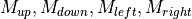
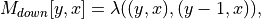
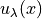
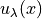

Module compute_energy.py¶
-
compute_energy.lambda_factor(image, ws=1.0, epsilon=1.0)[source]¶ Compute the smoothness weights for the LBP algorithm.
This functions computes the edge weights that will be used during the executiong of the Loopy Belief Propagation algorithm. The values are inversely proportional to the difference between adjacent pixels’ colors.
Parameters: - image : numpy array, type float32
Array representing an image (so with shape [h, w, 3]).
Returns: - list of numpy arrays, type float32
Said list contains four smoothness weight arrays with shape [h, w]; one matrix per neighbor direction. More precisely, if we denote the four matrices as , we have that
![M_{up}[y,x] = \lambda((y,x), (y+1, x)),](_images/math/bc6ae691a2afdc38286657120097e1eb88c1b2d6.png)
- 
![M_{left}[y,x] = \lambda((y,x), (y, x+1)),](_images/math/de31328888ab8cb499164e9f78fde86bc8e9ab6a.png)
![M_{right}[y,x] = \lambda((y,x), (y, x-1)).](_images/math/7c72b6137c0448a86e073d689d0f708a1556c692.png)
See also
lbp.lbp- Loopy Belief Propagation implementation.
Notes
the math formula used to compute the lambda factor for an edge (x,y), is given by

with
 and
and  positive constant values,
positive constant values,  the image’s color at pixel x, and  is
the image’s color at pixel x, and  is
-
compute_energy.compute_energy_data(frame_index, sequence, window_side=10, sigma_c=1.0, sigma_d=2.5)[source]¶ Compute the data cost term, for frame frame_index, to be used for the LBP algorithm.
This function computes an array with shape [m, h, w], where m is the number of depth labels used, h and w are respectively the pictures’ height and width. The value in this array at position (d, y, x), is inversely proportional to the likelihood that pixel (y,x) has disparity d. this value is computed using multi-stereo photo consistency constraints, and, if
sequence.use_bundle()==True, geometric consistency with previously estimated depth-maps (bundle optimization). The result of this function should be used as data cost for the LBP algorithm (seelbp.lbp()).Parameters: - frame_index : int
Frame whose depth-map is estimated.
- sequence : utils.Sequence
Object containing parameters necessary to the depth-maps estimation. It contains the camera matrices, picture arrays, length of the sequence, etc. If sequence contains also previously estimated depth-maps, then the bundle optimization phase is also executed.
Returns: - numpy array, type float32
Array with shape [m, h, w], with m the number of possible depth labels, and h and w height and width of frame frame_index.
See also
lbp.lbp- Loopy Belief Propagation implementation.
-
compute_energy.conujugate_coordinates(sequence, pose1, pose2, coorsxy, d)[source]¶ Return the image pixel coordinates with respect of two different camera poses.
Parameters: - sequence : utils.Sequence
Sequence object containing the camera parameters.
- pose1 : int
Index of the first pose in camera
- pose2 : int
Index of the second pose in camera
- coorsxy : numpy array, type float32
Homogeneous camera coordinates of shape [3, h, w], the first axis represents the coordinate itself.
- d : numpy array, type float32
Array of shape [h,w] that indicates the disparity to use for a certain pixel while computing the conjugate point.
Returns: - numpy array, type float32
Array with shape [3, h, w] representing the conjugate coordinates.
-
compute_energy.L2_norm(img_a, img_b, keepdims=True)[source]¶ Compute the norm of the per-pixel difference between the two images.
Parameters: - img_a : numpy array, type float32
First image, shape [h, w, 3]
- img_b : numpy array, type float32
Second image, shape [h, w, 3]
Returns: - numpy array
Array representing the norm of the difference between the two images. The array has shape [h, w, 1] if
keepdims==True, [h, w] otherwise.
-
compute_energy.homogeneous_coord_grid(h, w)[source]¶ Compute grid of homogeneous coordinates having three dimensions.
Parameters: - h : int
height
- w : int
width
Returns: - out : numpy array, type float32
Grid of homogeneous coordinates with shape [3, h, w], whose first axis indicates the coordinate itself, that is,
out[0, y, :] = yout[1, :, x] = xout[2, :, :] = 1